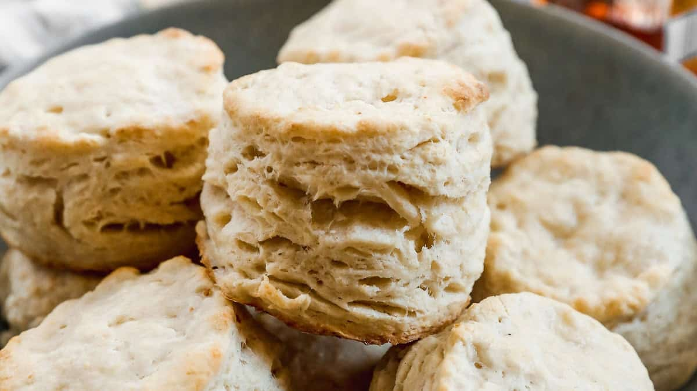

Home
Homemade White Bread

Description
Our homemade Buttermilk Biscuits are perfectly soft, flaky, and buttery, made completely from scratch with simple pantry ingredients.
There’s nothing better than a warm, flaky buttermilk biscuit straight from the oven, These are the best buttermilk biscuits that bake up perfect every time. Folding the dough creates those beautiful layers, giving the biscuits a crisp, golden top and a soft, tender inside. Instead of sugar, I sweeten the dough with a touch of honey, which adds the most subtle sweetness and makes them even softer. These biscuits are incredibly versatile, whether you’re slathering them with butter and homemade strawberry jam, pairing them with soup or eggs, or piling on sausage gravy, they always feel like comfort food done right.
Ingredients
- 2 cups all-purpose flour
- 2 1/2 teaspoons baking powder
- 1/2 teaspoon salt
- 5 Tablespoons butter, frozen
- 3/4 cup buttermilk
- 3 Tablespoons honey
Instructions
- Preheat oven to 400°
- Combine flour, baking powder, and salt in a large bowl. Grate the frozen butter into the flour mixture and then use a pastry blender or fork to incorporate it until mixture resembles coarse meal. Chill in refrigerator for 10 minutes. 2 cups all-purpose flour, 2 ½ teaspoons baking powder, ½ teaspoon salt, 5 Tablespoons butter
- Stir honey into buttermilk until well blended. ¾ cup buttermilk*, 3 Tablespoons honey
- Add buttermilk mixture to flour mixture and stir just until moist. Turn dough out onto a lightly floured surface and form gently into a ball. Roll or pat the dough into a rectangle ½ inch thick.
- Fold the dough into thirds (as if folding a piece of paper to fit into an envelope). Gently re-roll dough into a rectangle, ½ inch thick. Fold dough into thirds one more time. Gently roll to a 3/4-inch thickness.
- Cut dough with a biscuit or cookie cutter to form 10-12 biscuits. Place them 1 inch apart on a baking sheet lined with parchment paper.
- Bake at 400° for 10-12 minutes or until golden and cooked through. Remove from pan and cool on wire racks.
- Store biscuits at room temperature for 1-2 days, or for best results, wrap in plastic wrap and freeze leftover biscuits in an airtight container for up to 3 months.